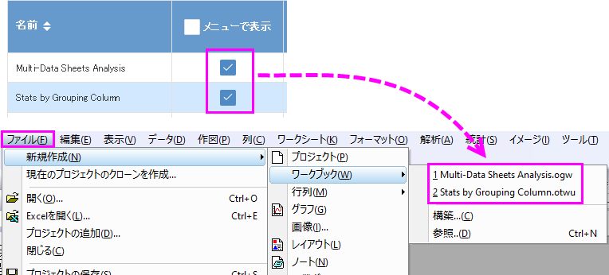
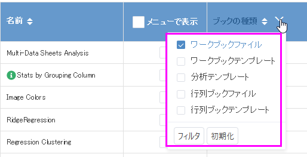

新しいブックダイアログ
New-workbook-dlg
新しいブックダイアログで、カスタムワークブック、行列ブック、および分析テンプレート全てにアクセスできるようになりました。ダイアログには、次の3つのクラスのテンプレートが一覧表示されます。
- ユーザテンプレートはカスタマイズされたテンプレートで、通常は<ユーザ>\Documents\OriginLab\User Filesに保存されます。
- 拡張テンプレートは、分析作業に使用するためOriginLabが提供する特別なテンプレートであり、通常は<ユーザ>\AppData\Local\OriginLab\Templatesに保存されます。
- グループテンプレートは、ワークブック/行列ブックを含むグループフォルダを共有しているユーザにのみ表示されます。他のユーザにはグループチェックボックスは表示されません。
- メニューのファイル：新規作成：ワークブック：参照 を選びます。
 | Originを起動したとき、またはプロジェクトを新規作成したときに、新しいブックダイアログは自動的にポップアップしません。これは、かつての新しいワークブックダイアログとは異なります。一方、ラーニングセンターで開始時に表示チェックボックスをオンにすると常に表示されるようになります。
|
| Note: グループチェックボックスは、グループフォルダを設定し、そこにワークブック/行列ブックを追加した場合にのみ表示されます。
|
ユーザブックの追加とすべてのブックを管理
- 既存のブックファイルをユーザファイルフォルダまたはグループフォルダに追加した場合は、ツールバーのユーザブックをスキャンボタン
 をクリックして、それらを自動的にスキャンできます。
をクリックして、それらを自動的にスキャンできます。
- ユーザファイル以外のフォルダからワークブックテンプレート（*.otwu）またはワークブックウィンドウ/分析テンプレート（*.ogwu）を追加するには、ツールバーのブック追加ボタン
 をクリックします。
をクリックします。
- ツールバーの管理モードボタン
 をクリックして、管理リストに切り替えます。このモードでは、
をクリックして、管理リストに切り替えます。このモードでは、
- リストからユーザブックを削除できます。拡張ブックは削除できません。
- いくつかのブックを非表示にして、リストの表示を変更します。ブックを非表示に設定すると、そのブックはグレー表示になり、ビューリストに表示されなくなります。
- 列ヘッダの上下ボタンをクリックして、名前、ブックの種類、カテゴリー、および位置でブックを並べ替えできます。
テンプレートセンターに新しいテンプレートを追加する
OriginLabは、テンプレートセンターからダウンロードできる専用のブックとグラフのテンプレートのオンラインリポジトリを用意しています。詳細については、テンプレートセンター をご参照ください。
ブックの検索とフィルタ
カテゴリードロップダウンリストから1つを選択し、検索ボックスに文字列またはテキストを入力して、ブックの情報で検索します。
拡張、ユーザ、グループチェックボックスをオンまたはオフにして、リストに表示するブックの種類を指定できます。
更なるビューリストの制御
- ブックのプレビューとファイル情報を表示
- ブック名の前にあるInfoアイコン
 にカーソルを合わせると、プレビュー、説明、ファイルパスがツールチップに表示されます。
にカーソルを合わせると、プレビュー、説明、ファイルパスがツールチップに表示されます。
- ユーザブックの編集
- ユーザブックファイルを右クリックして編集を選択すると編集ダイアログが開いてブックファイルを編集できます。
- 新しいワークブックまたは行列を作成するときに、ブックをデフォルトとして設定する
- ブックを右クリックしてデフォルトとして設定を選択すると、新しいワークブックボタン
 と新しい行列ボタンのデフォルトのテンプレートが変更されます。このビューリストにある場合、現在のデフォルトテンプレートは太字になります。デフォルトのテンプレートをクリアするか、別のテンプレートをデフォルトとして設定して、デフォルトのテンプレートを変更することができます。
と新しい行列ボタンのデフォルトのテンプレートが変更されます。このビューリストにある場合、現在のデフォルトテンプレートは太字になります。デフォルトのテンプレートをクリアするか、別のテンプレートをデフォルトとして設定して、デフォルトのテンプレートを変更することができます。
- ファイル：新規作成：ワークブック/行列メニューでブックを追加します。
- ブック名の後にあるメニューで表示チェックボックスをオンにして、ファイル：新規作成：ワークブック/行列メインメニューに表示するかどうかを決定します。
- 
- カテゴリーまたはブックの種類でブックをフィルタリング
- ブックの種類ヘッダの横にある下矢印をクリックして、ブックのフィルタタイプを選択します。
- 
- リスト内のブックをソート
- デフォルトでは、最近使ったブックファイルが表の一番上に表示され、新しく追加したブックも一番上に表示されます。手動でブックをソートするには、列ヘッダの上下ボタンをクリックして、名前、ブックの種類、カテゴリー、および位置でブックを並べ替えできます。